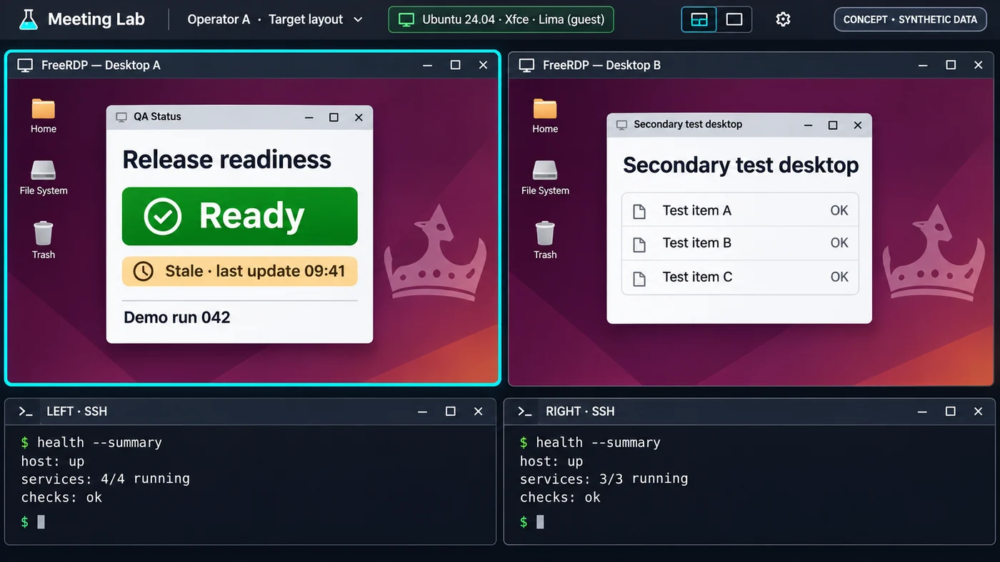
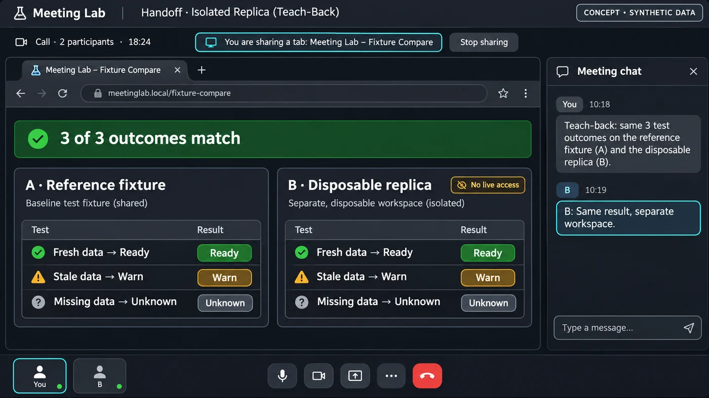

A / LIMA
What shipped?
Documented Ubuntu/Xfce layout: two remote windows above two terminal panes. Our release board is synthetic: health, sync and revision.
verify handoff
Two isolated operators. One checks the source. The other reproduces the behavior. Compare the evidence in the call.

01 RELEASE CHECK
A deployment badge tells you the revision is running. It doesn’t prove a new event got through.
Check the approved board: revision 42, Ready.
In a separate view, look for test fixture ML-042 and its event time.
Stale or missing evidence means unverified. Don’t guess why. Don’t change the system.
The fixture ID crosses the boundary. Credentials do not.
02 TARGETS
Each connection is scoped to a room, desktop and task, then expires. A visible pane is not a permission.

Documented Ubuntu/Xfce layout: two remote windows above two terminal panes. Our release board is synthetic: health, sync and revision.

One pane shows traces and usage. The other shows cluster, containers and jobs. Each session is bound to an approved pane or kiosk fixture.
03 REHEARSAL + LIVE SUPPORT

A explains the approved procedure. B reproduces one result with pinned test data. No route back to the live system. No shared secrets.
FIXTURE / ML-042
Source: revision 42, Ready. Rehearsal start: 14:30 UTC. Inspect the replica:
MATCH. ML-042 arrived at 14:32 UTC, after the rehearsal began.
UNVERIFIED. ML-042 shows 14:12 UTC, before the rehearsal. Old evidence doesn’t count.
MISMATCH. The replica says Ready but has no event timestamp. Arrival unproven.

Put two approved windows behind an opted-in presenter. Lose one window, blank one TV. Translate a dialog without clicking it; keep the error code intact.
04 DESIGN SPEC
EARLY ACCESS
One test-safe procedure. One result you can check independently.
SIGNUP: NOT OPEN YET